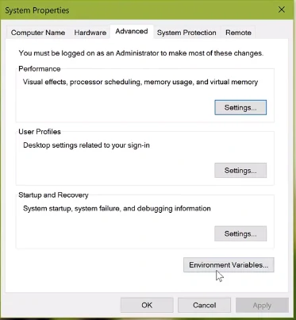
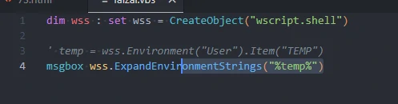
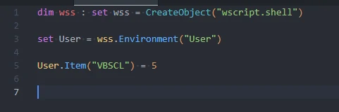

Environment variables add change remove
Membuka environment secara manual

Melihat letak folder environment
Melihat letak folder temp

Melihat Username
menghasilkan letak temp

menambahkan environment baru

Melihat value VBSCL
Menghapus Environment
melihat letak system
Melihat path system sesuai keinginan
Menambahkan path baru
- Hasil :
Menghapus/menimpa salah satu path
- Hasil :